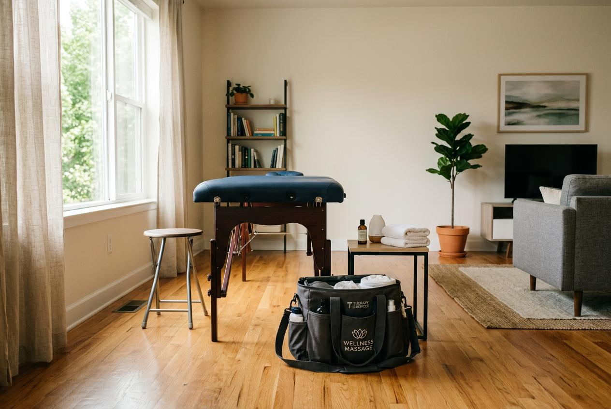

結束一整天忙碌的工作後，許多台北男士只想趕快回到住處休息。台北男士到府按摩是兼顧放鬆與便利的選擇，不必花時間外出，就能在自家空間裡享受按摩。本文帶你了解預約流程與費用說明。
為什麼男士會選擇到府按摩？
對許多在台北工作的男士來說，下班後的時間相當寶貴。想到要搭車去門市、結束後還要返家，就讓人疲憊。在家中接受按摩，省去交通來回，結束後可以直接休息。
在自己的住處裡，環境熟悉，可以依照習慣調整燈光與室溫。週末想待在家、或工作後不想多走路，到府服務就是理想安排。
台北男士到府按摩常見服務項目
到府環境設備有限，適合的項目與門市略有不同。以下列出四種居家常見類型：
經絡放鬆按摩
以手法為主，不需大型設備，只需按摩床即可進行。針對肩頸、背部與四肢操作，適合久坐上班族。
精油按摩
在家中進行精油按摩，你能控制房間的通風與溫度。按摩師攜帶基本油品到府，也可準備慣用精油。
運動按摩
著重於深層肌群與筋膜處理，到府讓你按摩後直接休息恢復，不用再搭車移動。
局部調理
若只是肩頸僵硬或腰部痠痛，可選局部調理。時間較短、費用較低，能靈活安排在空檔。
台北男士按摩服務流程怎麼安排？
預約到府按摩需確認較多細節，以下是五個步驟：
步驟一：選擇服務項目與時間
先決定按摩類型與時長，挑選方便時段。到府服務通常需提前預約，熱門時段建議及早安排。
步驟二：確認地址與交通資訊
提供完整地址與聯絡方式，說明社區入口位置。若為大樓，需確認訪客進入方式。
步驟三：說明空間與設備狀況
告知家中有無電梯，樓梯房需說明樓層。確認家中空間足夠擺放按摩床，附近是否有停車位。
步驟四：確認費用與付款方式
到府費用通常含按摩費與交通費，部分業者依距離或時段加收。預約時務必確認總費用。
步驟五：當日準備與接待
當日提前整理安靜、通風的空間，準備毛巾與衣物。按摩師到達後簡短溝通身體狀況即可開始。
台北男士按摩價格通常怎麼看？
到府按摩價格結構比門市複雜，除基本費用外還可能包含以下項目：
| 費用項目 | 說明 | 參考範圍 |
|---|---|---|
| 交通費 | 依距離與交通工具計算，部分業者採區域收費 | 200 - 500 元 |
| 時段加價 | 深夜、凌晨或假日可能加收費用 | 基本費 + 10% - 20% |
| 服務時長 | 以60分鐘為基礎，延長時間按比例計費 | 1,500 - 3,000 元/小時 |
| 取消政策 | 臨時取消或未提前通知可能收取部分費用 | 依各業者規定 |
建議預約前主動詢問總費用計算方式，價格明白的業者會在預約時提供詳細報價，讓顧客安心安排。

台北男士按摩推薦怎麼選？
選擇到府按摩時，除了價格外還應考慮以下幾點：
按摩師的專業背景：了解按摩師是否受過訓練、有無到府經驗。有經驗的按摩師能靈活適應不同空間。
服務區域與交通安排：確認業者是否服務你的居住區域，以及交通費計算方式。
預約彈性與時段選擇：選擇提供彈性時段的業者，能依照你的行程安排。
顧客評價與口碑：查看其他顧客的體驗分享，特別是準時性、專業度與溝通的評價。
到府按摩與門市按摩有什麼差別？
兩種方式各有特色，適合不同需求：
環境與設備：門市配備專業按摩床與燈光音樂設備。到府在你熟悉的居家環境進行，你能掌控氛圍。
時間成本：到府省去往返交通時間。門市需額外安排交通，但地點固定、容易找到。
隱私與舒適度：在家中隱私性較高，不用與其他顧客共用空間。
費用結構：到府通常比門市多一筆交通費。若將交通時間與車資計入，差距可能不大。
預約前需要注意哪些事項？
到府按摩雖然方便，預約前有些細節需留意：
確認家中空間足夠：按摩床展開後需平面空間，建議預留兩米乘兩米區域，周圍不要有尖銳物品。
寵物與家人安排：家中有寵物或小孩，建議事先安排在按摩期間不會打擾。
保持通訊暢通：按摩師出發前或抵達時會與你聯繫，確保手機暢通並在約定時間在家等候。
準備毛巾與飲用水：自行準備乾淨毛巾與飲用水，按摩後可補充水分。
提前告知身體狀況：有舊傷、皮膚過敏或正在服藥，應在預約時主動告知。
選擇按摩服務的重點整理
到府按摩為台北男士提供了靈活且省時的放鬆方式。從確認服務項目、了解費用結構，到安排好家中空間，每個環節都影響體驗品質。事前做好溝通與準備，就能在住處享受專業按摩。
如果你想找可靠的到府按摩選擇，金手指按摩提供彈性的預約時段與明白的費用說明，服務範圍涵蓋大台北地區。從預約到服務完成，每個細節都為你安排妥當，讓你在家就能享受按摩的舒適感受。
常見問題
到府按摩需要提前多久預約？
建議至少提前一至三天，週末或熱門時段提前一週較保險。
家中空間不夠大，還能預約嗎？
只要能擺放按摩床並預留操作空間即可。空間有限可與業者討論小型攜帶式設備。
到府按摩的費用會比門市貴嗎？
到府通常會額外收交通費，但考慮到省下的時間與車資，差距通常可接受。
按摩師會攜帶哪些設備到府？
一般會攜帶可摺疊按摩床、乾淨床單、毛巾與按摩用品。
臨時取消或改期，會有費用嗎？
大部分業者有取消政策，前24小時取消通常不收費，當天取消可能需支付部分費用。